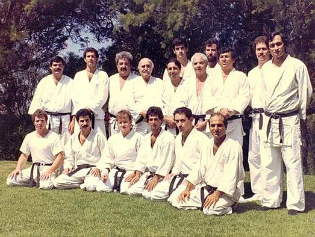
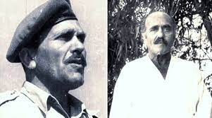

História do Krav-Magá
O Krav Maga é uma arte marcial desenvolvida em Israel que se concentra em técnicas práticas com ênfase em defesa pessoal. A frase "Krav Maga" em hebraico significa "combate de contato". Foi desenvolvido por Imirich (Imi) Lichtenfeld, Imi nasceu na cidade de Bratislava, na época parte do império Austro-húngaro, no dia 26 de Maio de 1910.
Foi diverso em praticas de atividades físicas e disciplinas específicas, misturada com sua inspiração,e perfeição, que o permitiu criar uma arte marcial tão complexa e completa como o Krav-Maga.
Imi trabalhou no circo como trapezista e arremessador de facas. Era nadador excelente. Tinha uma das maiores e melhores escolas de Valsa na cidade de Viena, na época capital cultural da Europa. Ele era campeão europeu peso pesado de Box Inglês, campeão Europeu de luta Greco-romana, além de ser portador de faixa preta de Judô e de Jujutsu Japonês Tradicional.
Inicialmente, o Krav Maga foi criado para ajudar a proteger a comunidade judaica contra grupos antissemitas na Europa.
Durante a Segunda Guerra Mundial (1939-1945) Imi se juntou á Legião Checa, que fez parte do Exército Britânico e lutou contra as forças Nazistas. Ao final da guerra a unidade do Imi estava alocada ao Egito e Imi, que era judeu orgulhoso, decidiu viajar de comboio até Israel e se juntar á resistência judaica lá, que lutava ainda pela independência de seu país.
Ao chegar lá, Imi descobriu rapidamente que suas habilidades eram extremamente valiosas para os jovens guerreiros da resistência judaica. Eles tinham muito poucas armas de fogo, e quando já conseguiram algum fuzil ou pistola, normalmente não tinham munição. Assim, Imi começou a desenvolver técnicas inéditas de como eliminar e neutralizar os soldados inimigos usando as mãos, bastões, facas, cordas etc. e foi assim mesmo que os judeus ganharam a sua independência e seu país no Maio de 1948.
No final da guerra da independência e com a fundação do Estado de Israel, criou-se também as Forças de Defesa de Israel e Imi tornou-se “Instrutor-Chefe de Defesa Pessoal & Preparação Física Para Combate” (seu título oficial no exército Israelense) e permaneceu nesta função até sua aposentadoria do exército, em 1966.
Ao se aposentar, Imi decidiu que chegou a hora de realizar seu antigo sonhou – criar uma inédita arte marcial Israelense, dedicada exclusivamente á defesa pessoal.
Para tal, ele abriu dois dojos em Israel, um na cidade de Natanya, no norte do país, e o outro na cidade de Tel-Aviv, localizada no centro do país.
Imi formou dez alunos nesses dois locais, cinco em cada cidade, e deu a faixa preta somente para esses dez alunos.
Imi faleceu na cidade de Netanya, onde viveu a maior parte de sua vida, no dia 10 de Janeiro de 1998.

Por que praticar Krav-Magá?
- 1. Simplicidade: As técnicas são projetadas para serem simples e fáceis de aprender, para
que pessoas de todas as idades e níveis de aptidão possam praticá-las.
- 2. Eficiência: O Krav Maga não se concentra em movimentos elaborados ou coreografados. Em
vez disso, ele ensina técnicas que são diretas e destinadas a incapacitar rapidamente um oponente.
- 3. Adaptação: O Krav Maga não possui regras estritas e não segue padrões rígidos. As
técnicas podem ser adaptadas a situações do mundo real, tornando-o altamente prático para cenários de
combate real.
- 4. Foco na autodefesa: Ao contrário de muitas artes marciais tradicionais que têm um
componente esportivo, o Krav Maga é puramente focado na autodefesa e na sobrevivência em situações de
combate.
As técnicas de Krav Maga incluem golpes, chutes, joelhadas, cotoveladas e técnicas de defesa contra ataques com
facas,
bastões e armas de fogo. Além disso, o treinamento de Krav Maga também enfatiza a preparação mental, ensinando
aos
praticantes como manter a calma em situações de alta pressão e tomar decisões rápidas.
O Krav Maga é amplamente ensinado em escolas especializadas ao redor do mundo e também é usado por diversas
forças de
segurança e militares devido à sua eficácia e simplicidade. No entanto, devido à sua natureza prática e
orientada para a
autodefesa, ele não é uma prática esportiva e não é praticado em competições formais como outras artes
marciais. Em vez
disso, é uma habilidade valiosa para aprender para proteger a si mesmo em situações de perigo.